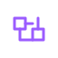
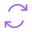
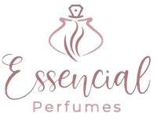
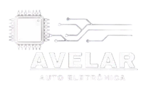
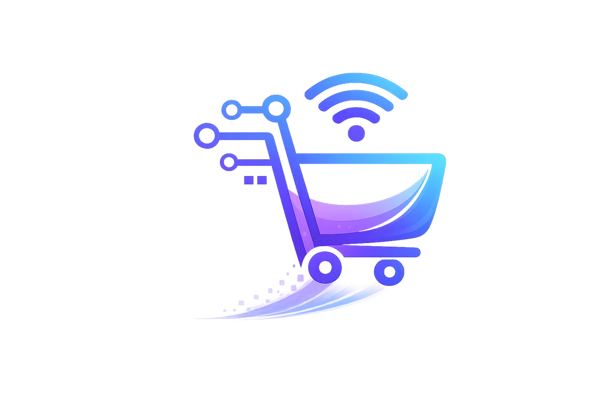

Problema real.
Tecnologia
com direção.
Presença digital, software, automação e inteligência artificial. Construídos a partir do que faz sentido para o seu negócio.
Seu negócio tem um jeito próprio.
A tecnologia também deveria.
Começamos pelo ponto em que seu processo perde tempo, informação ou oportunidade. Depois, desenhamos a solução.
Quatro frentes.
Uma mesma direção.
Da sua presença na internet à operação por dentro. Cada pilar pode funcionar sozinho ou se conectar aos outros.
Presença Digital
Estruturamos como sua empresa aparece, é encontrada e transforma interesse em contato.
Sites · SEO · Posicionamento
Software sob medida
Sistemas, dashboards, portais e integrações desenhados para a operação real do negócio.
Sistemas · Portais · Integrações
Automação
Reduzimos trabalho repetitivo e conectamos ferramentas, dados e rotinas.
Processos · Fluxos · OperaçãoInteligência Artificial
Aplicamos IA onde ela melhora atendimento, análise, busca, decisão ou execução.
Agentes · Contexto · DecisãoCada negócio,
um universo.
O objetivo é fazer cada negócio parecer mais ele mesmo. Explore algumas das linguagens que construímos.
Todos os projetos 01
01Caligulas Poker Live
Atmosfera de clube, programação, ranking e comunidade reunidos em uma presença digital própria.
 02
02LB Fit
Movimento, coleção e produto organizados para uma marca que vive entre treino e lifestyle.
 03
03Auto Elétrica Avelar
Tradição de oficina traduzida em uma presença digital técnica, direta e local.
 04
04Patrícia Biagioni
Experiência e individualização colocadas na frente da oferta, com uma identidade própria.
 05
05Lara Biagioni
Conteúdo, rotina, links oficiais e marcas parceiras em um destino simples de navegar.
Empresas que já passaram pela Custom Mind.
Negócios diferentes, necessidades diferentes. A tecnologia muda; o compromisso de entender o contexto vem antes.


Feitos por nós.
Prontos para evoluir com você.
Conheça os produtos que desenvolvemos para organizar o atendimento, a operação e a gestão de empresas.
Jade
Atendimento para WhatsApp com IA, contexto e passagem organizada para a equipe humana.
Conhecer a Jade →Zuri
Critérios de público, rotinas de descoberta, execução e acompanhamento para Instagram.
Conhecer a Zuri →
Loja Inteligente
Vendas, estoque, financeiro, clientes e regras específicas no mesmo fluxo.
Conhecer o sistema →Da necessidade real à solução em produção.
O projeto avança em ciclos curtos, com validação antes de investir pesado na etapa seguinte — seja em presença digital, software, automação ou IA.
Diagnóstico
Processo atual, gargalo, público e objetivo.
Prioridade
Escopo da primeira entrega e o que precisa ser provado.
Direção
Arquitetura, conteúdo e tese visual antes de espalhar componentes.
Implementação
Módulos, integrações e checkpoints verificáveis.
Evolução
Go-live, leitura de uso, ajustes e próximas fases.
Perguntas antes de começar.
Escopo, integrações, SEO, atendimento e processo sem promessa vaga.
O que a Custom Mind faz hoje?
Atuamos em quatro pilares: presença digital, software sob medida, automação e inteligência artificial. Jade, Zuri e Loja Inteligente são produtos desenvolvidos pela Custom Mind dentro desse ecossistema.
O que vocês chamam de presença digital?
É a estrutura que faz uma empresa ser encontrada, compreendida e contatada: site, Google, SEO, busca, dados estruturados, mensuração e integrações de entrada.
A Custom Mind trabalha apenas com projetos grandes e complexos?
Não. Nosso foco inclui sistemas, automações, inteligência artificial e soluções sob medida, mas também desenvolvemos projetos menores quando existe uma necessidade clara a resolver. Isso pode incluir sites, landing pages, automações pontuais, integrações, MVPs e ferramentas internas. O escopo é definido de acordo com cada projeto — uma solução não precisa ser grande para fazer sentido.
Tenho apenas uma ideia ou uma necessidade pequena. Posso falar com a Custom Mind?
Sim. Nem todo projeto precisa começar como um sistema completo. Podemos avaliar a necessidade, definir um primeiro escopo e evoluir a solução conforme fizer sentido.
Vocês criam sites preparados para o Google?
Sim. Estruturamos conteúdo, metadados, links internos, dados estruturados, sitemap e os fundamentos técnicos necessários para mecanismos de busca.
É possível integrar WhatsApp, Instagram e sistemas existentes?
Sim, quando as plataformas oferecem uma forma segura de integração. O fluxo é analisado antes de definir o escopo.
Como funciona um projeto sob medida?
Começamos pelo gargalo mais importante, desenhamos uma primeira entrega e evoluímos o sistema em etapas validadas.
Vocês atendem empresas fora de Passos?
Sim. A Custom Mind está em Passos, Minas Gerais, e atende projetos remotamente em todo o Brasil.